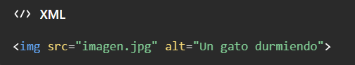
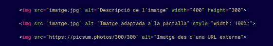

Para poner una imagen en una página HTML usamos la etiqueta . Dentro de ella indicamos dónde está la imagen con src y escribimos una descripción con alt.
Por ejemplo:
Para poner una imagen en una página HTML usamos la etiqueta . Dentro de ella indicamos dónde está la imagen con src y escribimos una descripción con alt.
Por ejemplo:

'Src' puede ser el nombre de un archivo guardado en nuestro proyecto o una dirección de internet. 'Alt' describe la imagen: ayuda a las personas que usan lectores de pantalla y también puede mostrarse si la imagen no carga.
<'img> no lleva etiqueta de cierre. También podemos indicar el ancho y el alto con width y height, aunque para adaptar la imagen a diferentes pantallas suele ser mejor usar CSS.

El texto de 'alt' debe describir la imagen según su propósito. Si una imagen es solo decorativa, se puede usar alt="" para que los lectores de pantalla la omitan.